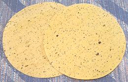
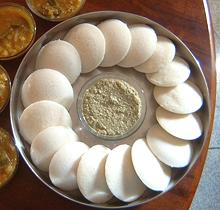

SAFARI
Users
Making Bread
Tava:
In Indian homes, the Tava is the traditional surface on which flat bread is baked, sometimes simply placed over a bucket of hot charcoal. Our Tava (right in photo) is rather upscale with a machine formed bowl and riveted handle - common tavas are pounded by hand out of sheet metal and many lack a handle, being manipulated with tongs. The tava is not at all suited to our gas and electric stoves. Being concave they are unstable even on a gas stove, and must be used with a wok ring - they are pretty much impossible for electric stoves. In India they are often used convex side up, which is an even worse problem. I strongly recommend the Lodge 10-1/2 inch L90G3 round griddle (Mexican "Comal" - left in photo) - a great piece of hardware, perfect for dry roasting spices and also for heating or frying Indian flat breads (and Mexican tortillas).
Tandoor:
Leavened bread In India is baked in a Tandoor. Indian homes do not have a tandoor - it is too expensive both to build and operate. It is normally a community or commercial device. Naan bread is prepared at home and taken to a community or commercial Tandoor to be baked. Dough is slapped on the inside wall of the tandoor, where it sticks and bakes quickly at very high temperature. It is then retrieved with a hook. Naan bread baked in such an oven will be of uneven thickness and of a sort of teardrop shape. Here in California, production bakeries have designed continuous industrial tandoors which produce breads that are round and even in thickness. Tandoor ovens are also much used in Armenia, Georgia, Azerbaijan, Turkey and Pakistan. Photo by Vinisfera.Pl contributed to the public domain.Varieties of Bread
Chapati
The Chapati, a variety of Roti (round flat bread), made from a whole wheat flour called Atta, is the mainstay of bread in India. In the North, it is served at breakfast, lunch and dinner. Traditionally, a servant would be making these fresh, continuously during meals, or in poorer households, it would be the wife's duty. It would be simply unthinkable to buy them. Here in Southern California we have a bit of a servant problem - no servants - and Indian wives here have caught this "liberation" bug. Chapatis are now produced here in bakeries, packaged and sold in Indian and some other markets, needing only warming. The photo specimens were 7-3/8 inches diameter 0.050 inches thick and weighed 1-5/8 ounces each. Made in California: wheat flour, water, vegetable oil, yeast, salt, calcium propionate. Some are of a lighter color than those in the photo - depends on the flour.
Subst: Whole wheat Tortillas are a dead ringer for
Chapatis. In the photo, the roti to the left is actually a chapati
obtained from an Indian market in Artesia. The one on the right is a
whole wheat tortilla, obtained from a local multi-ethnic market. They
look exactly the same, and they taste the same too. This is only logical
- they're made from the same stuff, whole wheat flour, and the chipatis
are made on easily available tortilla making equipment. Incidentally,
for those who still want to make them at home, Indian markets here now
sell tortilla presses to make it much easier than rolling them out.
Naan Bread
- [Tandoori Roti]This is the main leavened bread of India. It is traditionally made with yeast and white flour, and baked in a Tandoor oven (see top of page). If made in the traditional tandoor, the loaf will be tear shaped, due to drooping a bit after being slapped on the inside wall of the oven. They will also have one or more holes from being hooked out of the oven. The photo specimens, purchased at a large multi-ethnic market in Los Angeles, were made in Pakistan and shipped frozen. They were about 7 inches wide, 8 inches high and roughly 0.3 inch thick, weighing 3 ounces. Wheat flour, water, canola oil, salt, baking soda.
Here in Southern California, naan bakers use continuous process industrial "tandoors", so the breads are round and without holes, but otherwise pretty much the same. Naan bread can usually be found in the freezer cases of markets serving an Armenian, Indian or Pakistani community. They just need heating up on a grill, grill pan or oven (400°F/200°C for about 1-1/2 minutes). Hot naan bread is often brushed with butter for serving.
Subst: I have purchased Greek style pita bread (the
non-pocketed style) and found it essentially identical - not surprising
since that bread was made by an Armenian bakery that also makes naan
bread (tandoors, called "tonir" are much used in Armenia). Regular pita
bread wouldn't be as similar, but if a moderately puffy variety, it can
serve. Small bare pizza shells would also be similar.
Paratha
Very popular in northern India, this flat bread is made quite differently from other Indian flat breads. It is actually made like puff pastry, many thin layers kept loose from each other with butter, or in this case Palm Oil based margarine. Commercially, the disks are interleaved with plastic and frozen. They are not thawed before cooking because it would be very difficult to peel off the plastic if they were soft. They are then pan fried in very shallow oil until lightly golden. You need to use a very good oil because these absorb quite a bit of it, so the oil greatly affects the flavor. Made in Pakistan, 7 inches diameter, 2-5/8 ounces each, wheat flour, water, palm based margarine, salt, baking powder (E500).
Puri
- [Poori, Boori]These are usually served with a curry and chutney. This is a small unleavened flat bread that is deep fried rather than pan fried. Because of moisture in the dough, they puff up. The package of frozen puri I purchased pictured them puffed up into pillows, but the actual product puffed rather unevenly - they were still good, though. These were made in India, 4-3/4 inches diameter, 0.06 inch thick and weighed 3/4 ounce each. Wheat flour (65%) water, milk (1%), corn oil, salt.
Papad
 These are almost paper thin and very brittle. They are served as appetizers in Indian Restaurants, at least in California and England anyway. In England they are often served with a red onion relish. They are quickly dry fried and bubble up some. They may be in various sizes and are available with a variety of herbs and spices.
An essential ingredient is papadkhar, which acts as a preservative
and is also responsible for the bubbling. It is sodium benzoate, which
may be substituted by a 2:1 mix of sodium carbonate and sodium
bicarbonate. Made in India, 7-1/2 inches diameter, 0.020 inch thick
and weighing 5/8 ounce (16 grams). Urad dal, black pepper, salt,
asafoetida, papadkhar, vegetable oil.
Dosas & Idlis
The next two items differ from the above in that they are generally available only fresh in restaurants and Indian delis. They are also a bit of a problem for making at home, as idlis need an idli steamer or similar, and both need the Dal and Rice ground very fine to a paste. This is normally done with a Wet Grinder, an appliance very popular in India but almost unknown in the West - and they cost around US 2014 $200 to $275. A very powerful blender can be used if the grains are well soaked (a food processor definitely can't).Today, in India, many homes make "instant dosa" from rice flour, semolina flour and other finely ground flours, possibly with a little baking powder or buttermilk.
Dosa
These lacy flat breads are very popular in the southern states of India, where they originated. They are made of separately soaked, ground and fermented Urad Dal and Rice. They are mixed together to form a thin batter which is poured into a pan, very similar to how crepes are made in the West. There are versions made of other batters as well. The dosa in the photo I'm using (until I get time to make dosas) is actually made of semolina. Photo by Gpics at en.wikipedia distributed under license Creative Commons Attribution-ShareAlike v3.0 Unported.
Idli
 Idli are very popular in the southern states of India, especially for breakfast. Like Dosa, Idli are made of soaked, ground and fermented Urad Dal and Rice. Rather than being fried in a pan, they are steamed in metal trays with cup-like depressions. These trays are usually set up in tree-like tiers so many can be made at once. Photo by Soumya dey at en.wikipedia distributed under license Creative Commons Attribution-ShareAlike v3.0 Unported.